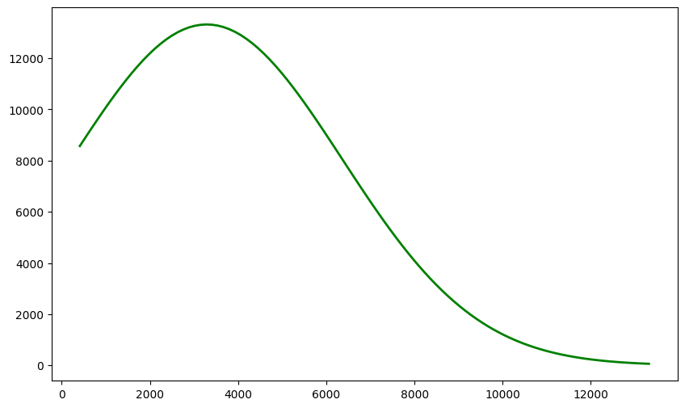
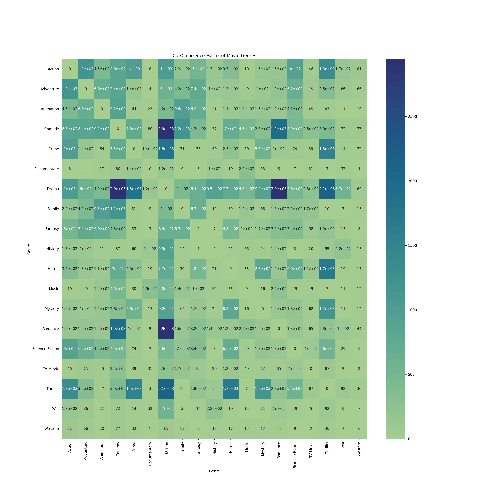
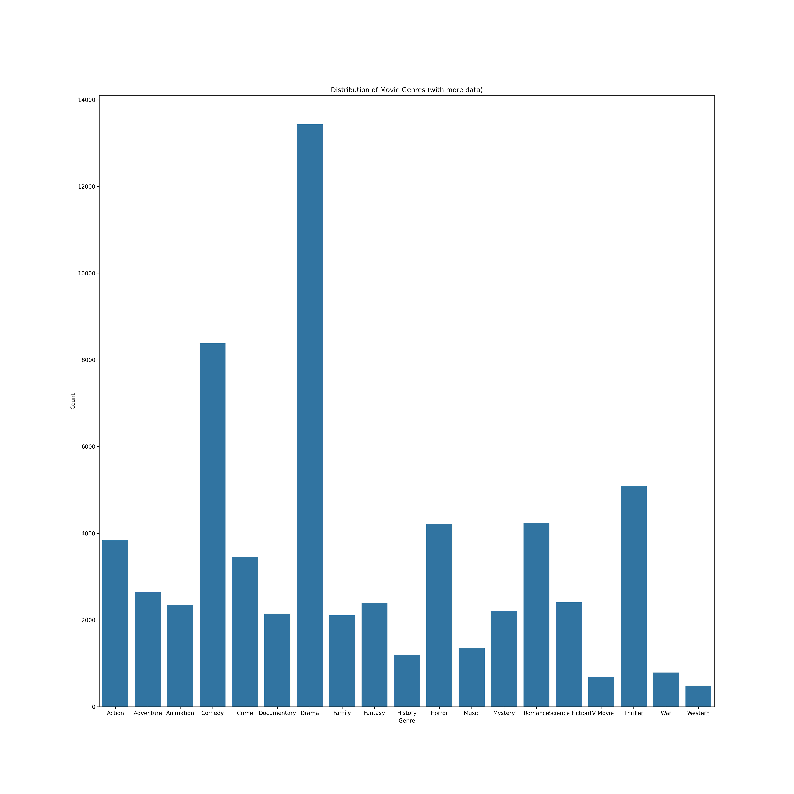
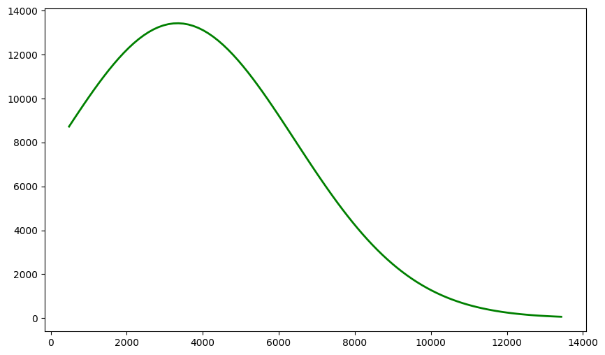

The original dataset is from "Letterboxd (Movies Dataset)" by Simon Garanin from Kaggle.com and is sourced from GPL3 (https://www.gnu.org/licenses/gpl-3.0.en.html). As I am deploying this via GitHub Pages, it counts as distribution. The amount of data cleaned up (removing N/A, fill out genres, etc.) amounts to 27068 movies. The distribution of the original dataset is seen below:
Supplemental data is from TMDB (as specified by TMDB API Attribution page, the logo is included below for the use of their data).
Data Distribution (Genres)
The genres in the dataset are: Action, Comedy, Adventure, Thriller, Drama, Science Fiction, Music, Romance, History, Crime, Animation, Mystery, Horror, Fantasy, War, Western, TV Movie, Documentary.
Unbalanced Data
Observation of the distribution of datasets show that the data is highly unbalanced, with the most prevalent genres being Drama & Comedy. The least represented genres are Western, TV Movie, War, History, Music, and Family. I attempted to correct this by using supplemental data from TMDB on the specified underrepresented genres. The Gaussian distribution of the original dataset is shown below:

The cleaned csv's (genre and movies) are then uploaded to a Kaggle account for me to pull the data using Kaggle's API. The id's in both csv's are utilized to create a movie dictionary where the ID is matched to the genres. The values in the dictionary were used to create a co-occurence matrix. For movies that had more than two genres, I used itertool's permutations and python frozenset and looped the dictionary to remove any duplicates (for example, "Action, Comedy" and "Comedy, Action" are duplicates). The values are converted into a pandas dataframe and plotted with Seaborn Heatmap.
Co-Occurrence Matrix
Pictured below is the co-occurrence matrix for the movie genres. By inspection, the highest combinations are with (Comedy, Drama), (Drama, Romance), and (Drama, Thriller). The lowest combinations are (Documentary, Western), (Documentary, Thriller), and (History, Science Fiction).

Dataset Balancing
After gathering the data, I attempted to balance the data in two ways. The first was simply finding more data (done through TMDB) and appended it to the existing Pandas dataframe that I had with the data from the original dataset (data increase of 400). This has only slightly increased the presence of the underrepresented genres, as shown in the barplot and Gaussian distribution below:


This did not fully balance the data, so I applied random undersampling to the overrepresented data and upsampling to the underrepresented data as recommended by recent sources such as Medium.com and Google for Developers
Text Preprocessing
The data is in the form of a pandas dataframe and has columns "description" and "genres". These genre labels are passed through Scikit's MultiLabel Binarizer and trainsformed, which converted them into a Numpy array of 1's and 0's. Some minor dataframe editing was done in order to ensure that the columns were "descriptions" and "genres" (or the category of genres) and not the index.
NLTK packages "punkt", "stopwords", and "punkt_tab" were called to remove stopwords such as "the", "a", etc. that did not contribute much to understanding the text (compared to keywords).